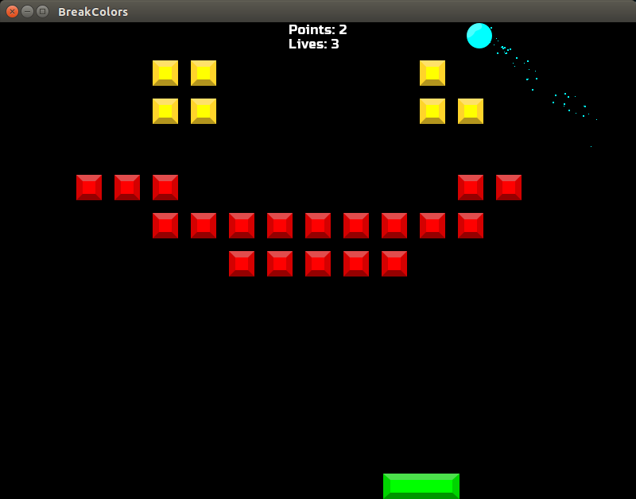
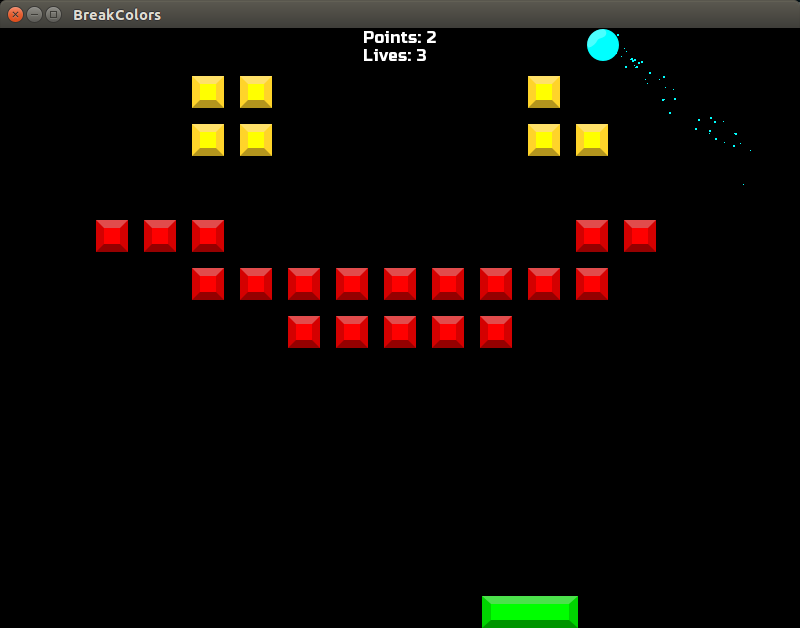

Wykonane projekty:
BreakColors
Nasz pierwszy projekt, wykonany w C++ i SFML na WSOC2014. Jest to prosty klon arkanoida.
Jesteśmy małym studiem programistycznym, które ma swoją siedzibę na Warmii i Mazurach. Wspaniałe otoczenie wspomaga nas w naszej pracy.
 

Nasz pierwszy projekt, wykonany w C++ i SFML na WSOC2014. Jest to prosty klon arkanoida.